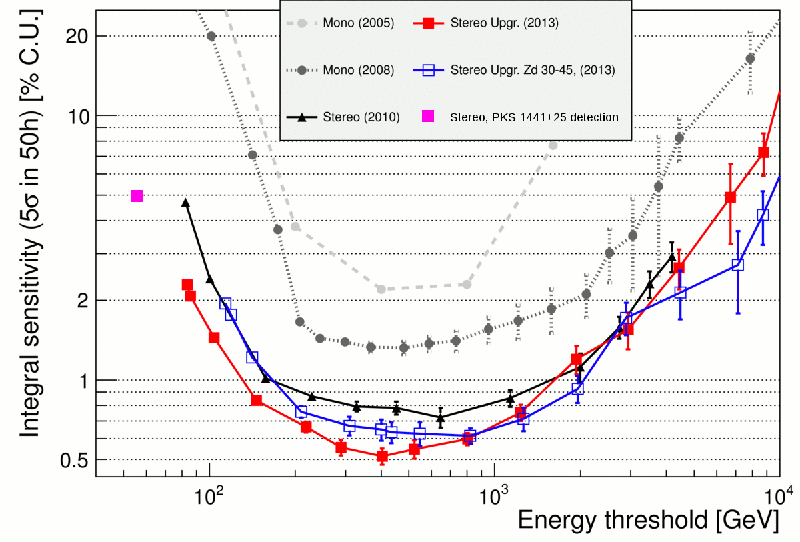
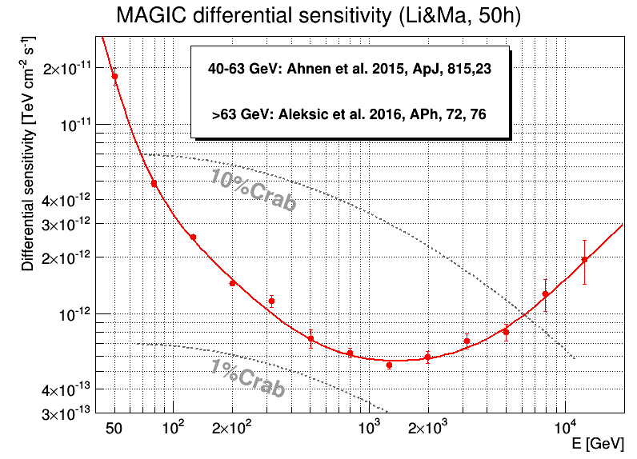
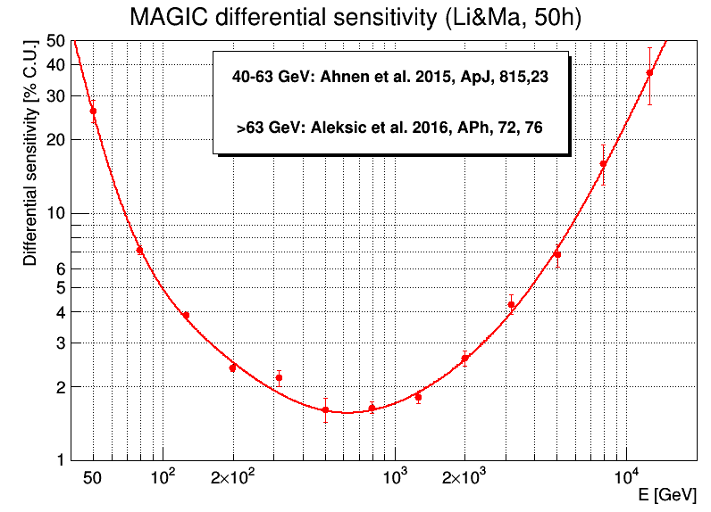
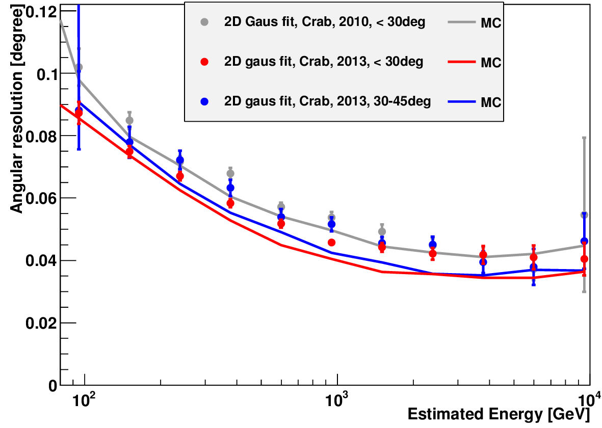

MAGIC Performance
All aspects of the MAGIC performance (including tabulated energy-dependent performance numbers) are described in detail in Aleksić et al., Astroparticle Physics, Volume 72, 1 January 2016, Pages 76-94. The performance shown here corresponds to data taken in 2013.
Integral sensitivity
We define the sensitivity as the integrated flux of a source above a given energy for which the number of excess events (\(N_{\mathrm{excess}}\)) divided by the square root of the number of background events (\(N_{\mathrm{bkg}}\)) is equal to 5 after 50 hours of effective observation time. In addition, we require that \(N_{\mathrm{excess}} > 10\) and \(N_{\mathrm{excess}} > 0.05\,N_{\mathrm{bkg}}\).
The corresponding energy threshold is computed as the peak of the true-energy distribution of a Monte Carlo sample with a Crab-like spectrum. Integral sensitivity computed according to different definitions and tabulated numbers are available in Aleksić et al. (2016).
All the curves are computed using samples of Crab Nebula data. For example, the sensitivity computed according to the Li & Ma significance with five background regions is (0.67 ± 0.04)% C.U. above 290 GeV and (1.45 ± 0.02)% C.U. above 100 GeV for 50 hours of observations.

Differential sensitivity
Differential sensitivity of MAGIC: the flux of a source that gives a \(5\sigma\) signal after 50 hours of observations, calculated according to the Li & Ma formula assuming three background regions, in the estimated-energy bin \(E_1\)-\(E_2\). Low-zenith-angle observations (below 30°). Conversion to absolute flux units is done using the Crab Nebula spectrum from Aleksić et al. (2016, APh, 72, 76). Points above 63 GeV are obtained with Crab Nebula data (Aleksić et al. 2016, APh, 72, 76); the 40-63 GeV point is obtained with PKS 1441+25 data (Ahnen et al. 2015, ApJ, 815, 23). You can download the data in tabular format from this file.


Sensitivity at approximately 50 GeV
Even while 50 GeV is usually below the analysis threshold of the MAGIC telescopes (for a standard stereo trigger) for a Crab-like spectrum, it is still possible to perform scientific observations with the MAGIC telescopes at those energies. Due to unfolding corrections for the energy resolution and bias, it is also possible to reconstruct reliable spectra at energies not far below the energy threshold.
Moreover, for steep-spectrum sources (distant AGNs, GRBs, and pulsars), the peak energy shifts to lower values. For example, a strong \(25\sigma\) detection of the \(z = 0.939\) flat-spectrum radio quasar PKS 1441+25 corresponds to a sensitivity of 5% Crab flux above 55 GeV for 50 hours of observations.
Angular resolution
We define the angular resolution as the sigma parameter of a two-dimensional Gaussian function fitted to the gamma-ray excess distributions. This corresponds to approximately a 39% containment radius of gamma rays.
